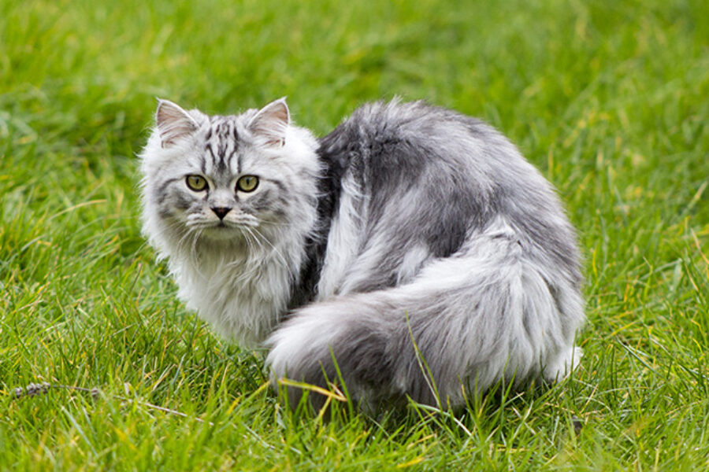

British Shorthair
The British Shorthair is the pedigreed version of the raditional British domestic cat, with a distinctively stocky body, thick coat, and broad face. The most familiar colour variant is the "British Blue", with a solid grey-blue coat, pineapple eyes, and a medium-sized tail.

Persian Cat
Persian Cat
The Persian cat, also known as the Persian Longhair, is a long-haired breed of cat characterised by a round face and short muzzle. The first documented ancestors of Persian cats might have been imported into Italy from Khorasan as early as around 1620, however, this has not been proven.